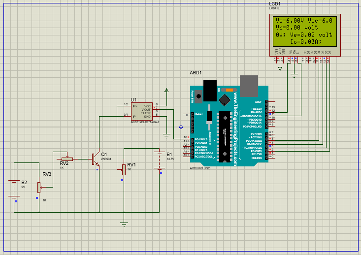

Eksperimen Menggunakan Proteus

Arduino
Arduino Uno adalah board mikrokontroler berbasis ATmega328 (datasheet). Memiliki 14 pin input dari output digital dimana 6 pin input tersebut dapat digunakan sebagai output PWM dan 6 pin input analog, 16 MHz osilator kristal, koneksi USB, jack power, ICSP header, dan tombol reset. Untuk mendukung mikrokontroler agar dapat digunakan, cukup hanya menghubungkan Board Arduino Uno ke komputer dengan menggunakan kabel USB atau listrik dengan AC yang-ke adaptor-DC atau baterai untuk menjalankannya.
Disini kami diminta oleh Dosen Elektronika kami untuk mencoba bereksperimen dengan Proteus di device kami. Saya mencoba untuk membuat rangkaian sesuai dengan PDF Eksperimen TRIN. Komponen yang digunakan di Proteus untuk eksperimen kali ini adalah Battery, Resistor, Sensor Arus dan Sensor Tegangan.
Disini saya menyambungkan Arduino Uno dengan sambungan kabel 2,3,4,5,11, dan 12 ke sambungan kabel LCD 4,6,11,12,13, dan 14. Saya juga menggunakan sensor bertipe ACS712ELCTR-20A-T dan menyambungkan kabel VIOUT pada sensor ke PC0 Arduino. Baterai yang digunakan memuat tegangan 13,5 V dengan resistor 1k.